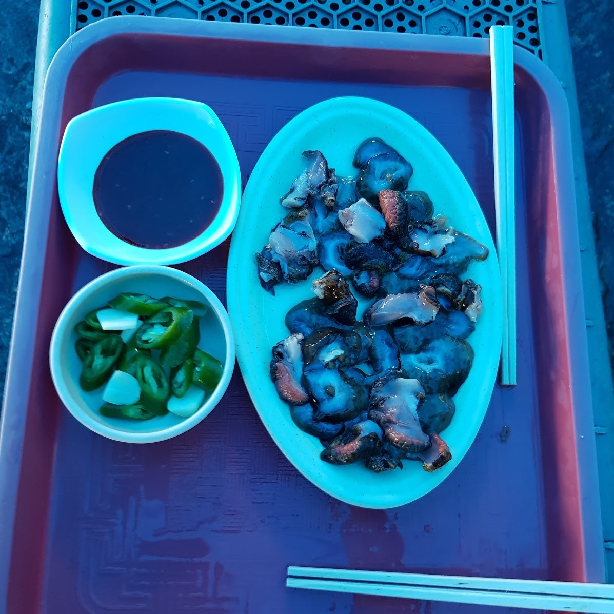

다 큰 아빠와
다 큰 딸이 떠나는
제주여행
(딸 ver.)
19.07.19- 19.07.22
✈여행을 가기전
: 우리는, 사실 나는 맛있는 것을 좋아하고 음식 위주의 여행을 원했다. 그런 마음을 알았는지 아빠도 맛있는 것 위주로 리서치를 하고 나한테 검사를 맡았다.
가는 방법은 배를 타고갈까 하다가 비행기가 싸서 비행기를 타기로했다, 간단하게. 비행기를 찾는데 에어텔을 하자고 했다. 그러다가 나는 렌트카 까지 찾아보자 했고 결국 편한 에어카텔을..무려 에어.카.텔을 예약했다.
"우리 이건 꼭 먹어야되. 아빠가 비상금 털어서 사줄거니까. 잘 메모해."
그래서 정말 먹으러 제주도를 가기로 했다.
✈1DAY
인천공항-제주공항- 용두암-자매국수- 봄날카페-쿠키키-88돼지-숙소
[EPISODE1. 비행기가 너무 흔들려]
비교적 싸게 갔다오기 위해 싼 비행기를 탔더니 비포장도로의 버스를 타고 간 것 같았다. 둘다 멀미가 심해서 아빠는 농담 반 진담 반으로 '종이봉투 후하후하'를 사용했다.
[용두암에서 꼭먹어야 할것] - 해녀 분들이 직접 잡아 주시는 해산물들
*미끄럽고 험난한 바위길을 잘 가로질러야 함

[자매국수네 고기국수]-워낙유명해서…역시 고기국수 졸맛
*대기가 좀 있을 수 있음
[가는길에 돌하르방빵]-이게 은근 중독성이 있더라고요...뭔데 다맛있어..?
*약간의 유자냄새 나는 한라봉 포함..
[봄날카페]-커피가 맛있었음..! 사실 웰시코기 보러갔어요.
*웰시코기 너무 귀여움,,,,,
[쿠키키]-여기 비주얼치고는 생각보다 싼편. 단거 좋아하면 추천bb
*근데 주차공간이 약간..많이 협소합니다.
**************************여기 중요합니다**************************
[88돼지ㄱㄱ..]- 아니 이거는 '그냥 맛있어요.'가 아니라니까요..? 그냥 가보세요. 예?
*흑돼지에 한라산? 관광객 필.수.코.스 라고요.. 아 그리고, 좋은 건 크게보라고 배웠습니다.
*딸 pick!
✈2DAY
숙소-이곳저곳-서귀포 시장-갈치구이집-게하
[숙소 조식]-아니 무슨 조식도 맛있어...짜증나게..”아주깔끔해…”
*고되지만 일찍일어나야 된다는 점..
[서귀포 시장]-후 생각하니까 입에 침고여...여긴 진짜 맛있는 거 천국..
*자아아알 둘러 보십시오..세상에 맛잇는게 얼마나 많은지
*꽁치김밥을 먹을때 어린이들은 가시에 주의하세요^^
*아버지들,, 머리가 그렇게 꼬소하답니다.
*고양이들 중성화는 땅콩떼기라고 하던데...땅콩빵입니다.
[갈치구이집]-사실 별 기대없이 배채우려고 충동적으로 들어간곳이였는데..
*갈이구이랑 고등어도 주고 제육볶음이 맛있습니다.

**************************여기 중요합니다**************************
[게하]-여기가 우리의 고오급 식당입니다. 차린만큼 우리꺼
*근데 여기 게하 남자친구랑 오는 것 추천 ❤
✈3DAY
조식-우도-마라도-문어빵-박물관-숙소(석식)
[조식]-제가 얘기했나요? ‘더머뭄’에 가시라고..? 전복죽 굿굿!
*광고 아니고요, 전복죽은 미리 말씀하셔야 합니다.!
[우도]-우도에 가면 오토바이를 타는 건 핑계고.. 다들 땅콩아이스크림 아십니까..?
*쉐이크? 도 맛있음!!
*아빠는 덜 단 쉐이크가 좋다고한다…!
[마라도]-라고 먹을게 없겠습니까~? 짜장면을 먹어줘야쥐~
*여기가 그 “짜장면 시키신분~!” 거기 아닙니까~
[문어빵]-신기해서 함 먹어봤습니다. 예. 제 대답은 역시나 맛있다고요.
*요론거는 또 하나가지고 나눠먹는게 재미..!
*************************여기 중요합니다*************************
[숙소]-1층에 흑돼지집이 있지 뭐야? 그냥 지나칠 수 가? 없.지
✈4DAY
숙소-등산-해물라면-엉또폭포-공항-집
[해물라면]-이게 진짜 어떻게 이런맛이 나지..? 등산하고 먹어서 맛있었나..?
*산타고 먹으면 상쾌함이 2배~!
*아빠 pick!
[공항]-역시 제주 답게 말고기 스테이크가 있었네요.. 일단 먹어봅니다.
*관절에 좋다길래 많이 드시라 했습니다 예.
✈여행 다녀온 후
:사실 아빠도 먹을걸 좋아하시기 때문에 이만큼 한거라고 생각한다. 그걸 알고있었기에 우린 싸우지 않고 둘만의 첫 여행을 마무리 지었다.
갔다온 후 부터 제주도 관련, 우리가 돌아다니며 겪은 것, 먹은 것 관련한 무언가가 나오면 우리는 얘기하느라 정신없었고 그게 추억이 된 것 같았다. (아빠랑은 친구 같기 때문에) 제주도에 가서 장난도 많이 치고 상담도 많이했다. (내가 상담해 주기도 한다.)
둘이 제주도를 갔다온 것을 알리면 놀라워 한다. 안어색하냐고요? 당근. 아빠와 나는 너무 웃기고 재미있었으며 때로는 돈독해지는 여행이라고 확신한다.
“서현아, 아빠랑 또 먹으러 가 줄거지?”
“그때는 내가 맛있는 거 사줄게, 같이가자.”
여행에 무척 만족했다. 안녕~